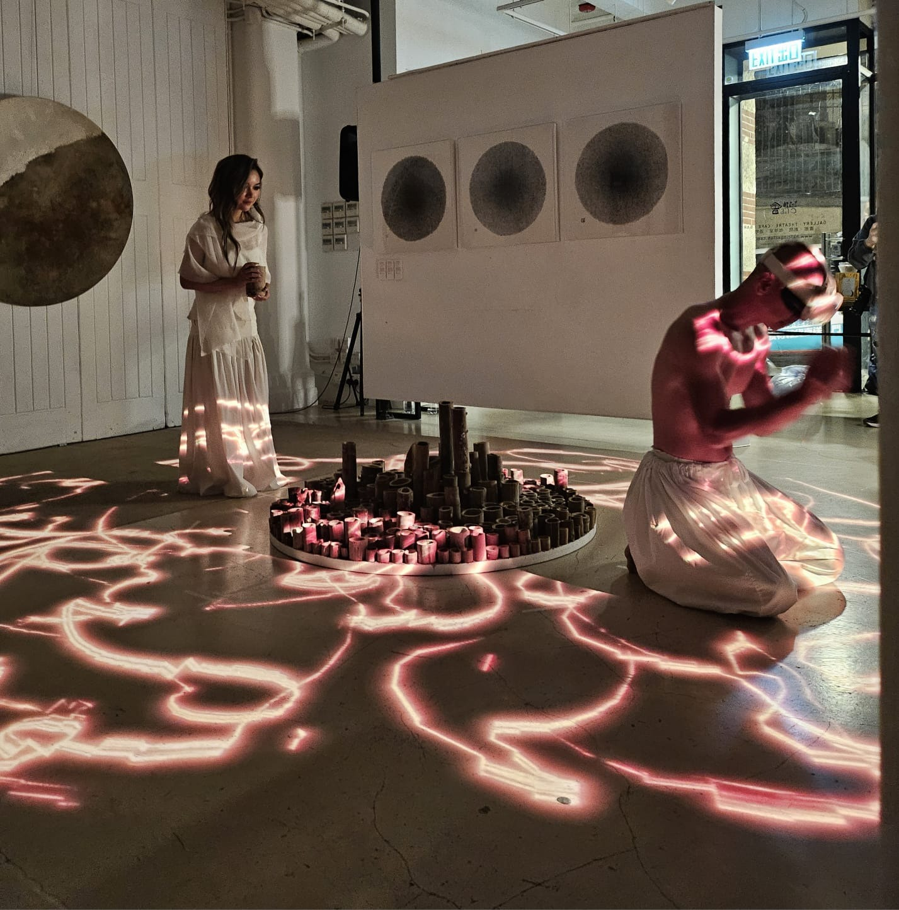

X-ARt



X-ARt explores the interstices of Man and Nature, Art and Technology. Using augmented reality technologies, we metaphorically reveal the ‘fields of force’ and ‘flows of materials’ of Nature, to arouse a greater appreciation of Nature and its invisible forces that affect every aspect of our lives.
Performances and Experimentations
X-ARt conducts performances and experimentations that are specifically designed around a physical site.
- March 24, 2025 - Art Fringe, Fringe Club, Central, Hong Kong
- January 11, 2025 (2 performances) - Sai Kung Hoi Arts Festival, Yim Tin Tsai, Hong Kong
- January 10, 2025 - Fringe Festival, Fringe Club, Central, Hong Kong
- November 17, 2024 (3 performances) - Sai Kung Hoi Arts Festival, Yim Tin Tsai, Hong Kong
- November 8, 2024 - Sai Kung Hoi Arts Festival, Yim Tin Tsai, Hong Kong
- August 1, 2024 - The Altitude, Gaia Hotel Bandung, Yogjakarta, Indonesia
- July 29, 2024 - Borobodur, Panambaran, Yogjakarta, Indonesia
- July 27, 2024 - Yim Tin Tsai Old Pier, Hong Kong
- May 2024 - Tew Falls, Hamilton, Ontario, Canada
- May 2024 - Nordlingen Woods, Markham, Ontario, Canada
- April 25, 2024 - Sharp Island beach, Hong Kong
- February 10, 2024 - Shaw Auditorium, HKUST, Hong Kong
- December 2, 2023 - Heath, Tsim Sha Tsui, Hong Kong
Engagement Activities
X-ARt also conducts engagement workshops around AR art.
- December 8, 2024 (3 workshops) - Sai Kung Hoi Arts Festival, Yim Tin Tsai, Hong Kong
Artists
C-ARt is a collaboration between four artists:
Technical team (past and present, in alphabetical order):
- CHAN Ho Ching Carson
- Kirill SHATILOV
- WU Chun Ming Jimmy
- WU Zhen
- YONG Vi Jun Sean
- ZHUO Yuchao
Contact
For any enquiries, please contact braudt@ust.hk